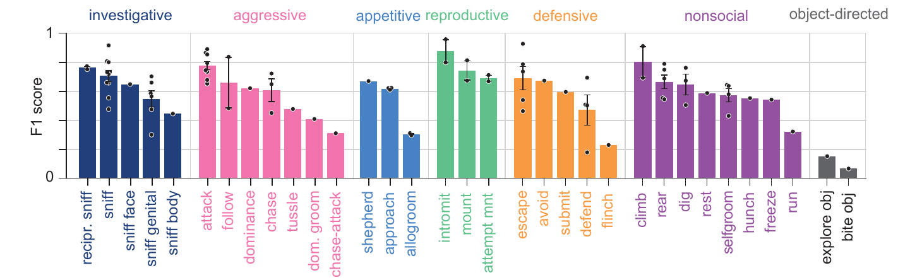

Accurate across the behavioral repertoire
On the held-out DooM test set, HiDRA reaches a per-lab macro-averaged F1 score of 0.66 across all 82 classifiers. Predicted time spent in each behavior closely tracks human scoring.
For about half of the classifiers, most remaining errors are disagreements about exactly when a bout starts, within half a second of the human-annotated onset. Human annotators are inconsistent about onsets too, and HiDRA applies the same rule every time.
